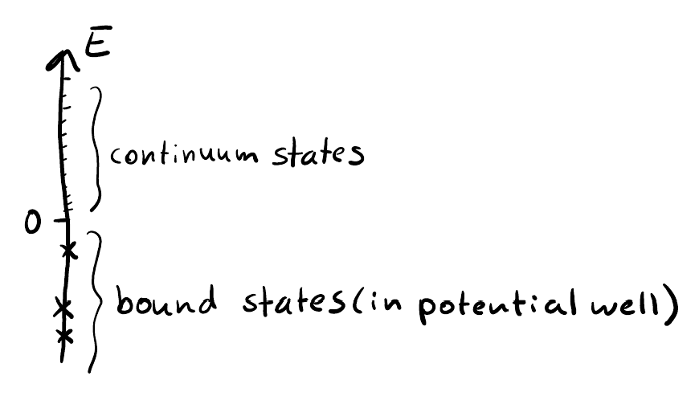
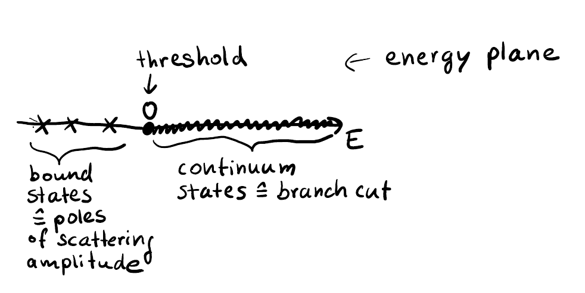
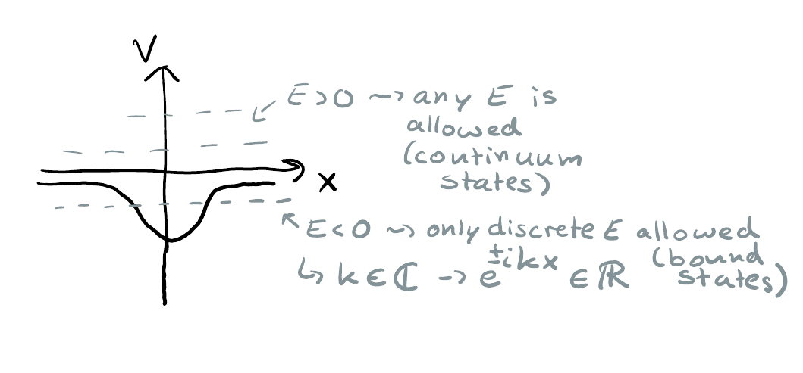
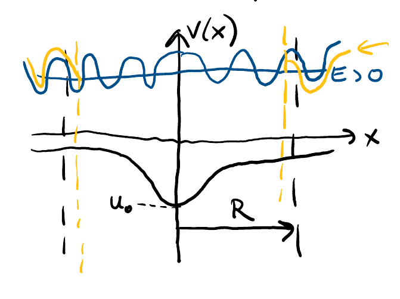
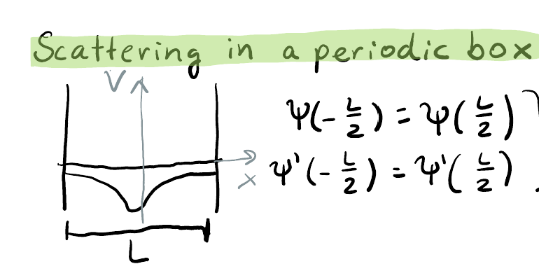
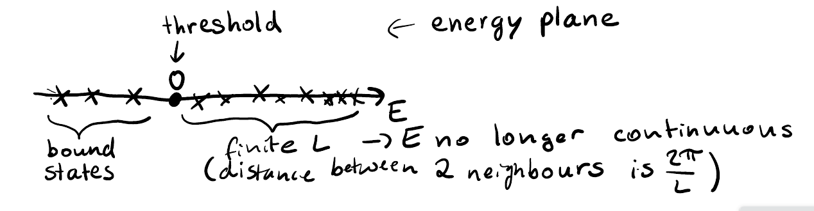
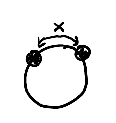

(2025) Lecture 11
Presenter: Mikhail Mikhasenko
Note Taker: Anna Zimmer
1 Analytic Structure of Scattering Amplitudes and the Quark Model
1.0.1 Thresholds and Branch Cuts
The threshold for \pi\pi scattering (assuming no other open channels) is at M_\pi + M_\pi — the branch point of the amplitude. The branch cut is drawn to the right on the real axis of the s ‑plane to satisfy causality.
A cross channel also exists for this reaction — for example, \pi^+\pi^- \to \pi^+\pi^- has a t ‑channel where \pi^+\pi^+ scattering appears. (see Figure 7) This introduces another branch point on the left (negative s region) of the s ‑plane. #### Scattering Channels and Mandelstam Variables
The scattering amplitude is an analytic function of the Mandelstam variables s and t (or equivalently s and u , since s+t+u = \sum m_i^2 ). For a given reaction (called a channel), the kinematically allowed region in (s,t) is different.
| Channel | Physical Kinematics |
|---|---|
| s ‑channel (e.g. \pi\pi\to\pi\pi ) | s > (2M_\pi)^2 , t<0 (momentum transfer) |
| t ‑channel (e.g. \pi\bar\pi\to\pi\pi ) | t > (2M_\pi)^2 , s<0 |
| u ‑channel (e.g. \pi\pi\to\pi\pi with legs crossed) | u > (2M_\pi)^2 , s<0 |
The same amplitude A(s,t) describes all three channels. When we take partial-wave projections in the s ‑channel, the t ‑ and u ‑channel singularities appear as branch points on the left‑hand side of the complex s ‑plane (for negative s ). #### Riemann Sheets and Singularities
The amplitude can be analytically continued across the branch cut to a second Riemann sheet (denoted A_2 ). The analytic structure on the second sheet is similar (branch point, cuts), but the values above the cut on the first sheet match the values below the cut on the second sheet.
On this second sheet lie virtual states and resonance poles. In \pi\pi scattering in P ‑wave, the \rho meson appears as a resonance pole. #### Quark Model Picture of Mesons
The quark model organizes mesons into levels according to the relative orbital angular momentum L_{QQ} between the quark and antiquark. The “bare” spectrum consists of boxes like 1s, 1p, 2s, … with hyperfine splitting (spin‑spin and spin‑orbit interactions) generating the fine structure.
For a c\bar{c} pair:
- The lowest 0^{-+} state is \eta_c (1s).
- The 1^{--} state is J/\psi (1s, spin‑triplet).
- The 1^{++} state \chi_{c2} belongs to the 1p box.
This scheme maps most known mesons into simple angular‑momentum levels. #### The \rho Meson as a \pi\pi Resonance
In the quark model, the \rho and \pi differ only by their spin wave functions. Unlike hydrogen‑atom transitions (which emit photons), QCD allows cheap creation of quark‑antiquark pairs from the vacuum. Therefore the \rho decays mainly to \pi\pi : \rho \;\rightarrow\; \pi\pi
This is strong decay; the \rho appears as a resonance in \pi\pi scattering. When two pions come together, they feel an attraction at the bare mass of the \rho , producing a peak in the cross section. That peak corresponds to a complex pole in the scattering amplitude on the second Riemann sheet. #### Summary and Next Steps
Every particle is a pole in the complex plane of the scattering amplitude. To identify these poles, one must:
- Understand the analytic structure (branch cuts, Riemann sheets).
- Use techniques like the key plane (devoid of cuts) and loop functions for two‑particle scattering.
These concepts are fundamental not only in scattering theory but also in lattice field theory, where lattice computations help extract resonance properties from first principles. The next session will focus on lattice methods and current research.
The distinction between bound states, virtual states, and resonances lies in their pole locations relative to the branch cut and the chosen Riemann sheet.
2 Virtual and Bound States in Scattering Amplitudes
2.1 States from Singularities in the Scattering Amplitude


Depending on where a singularity appears in the complex energy plane, the state is classified differently, and the measured mass spectrum shows a distinct shape:
| State | Location | Sheet | Effect on Cross Section |
|---|---|---|---|
| Resonance | Bump above threshold | Unphysical | Peak above threshold |
| Bound state | Below threshold | Physical sheet | Peak (diverging to infinity) below threshold |
| Virtual state | Below threshold | Unphysical sheet | Threshold cusp (no peak below) |
2.2 Cross Section and Phase Space
The measured cross section for scattering two particles is
\sigma = \frac{1}{j} |A|^2 \; \text{integrated over final-state configurations}.
If only one partial wave contributes (spinless particles), the angular integration can be performed analytically, leaving
\sigma = \frac{2J+1}{8\pi} \, \frac{2p}{\sqrt{s}} \, |A|^2.
Here p is the breakup momentum (momentum of either particle in the center-of-mass frame), \sqrt{s} the total center-of-mass energy, and \frac{2p}{\sqrt{s}} is the phase space factor \rho .
- The phase space factor \rho = \frac{2p}{\sqrt{s}} vanishes at threshold and then rises.
- The phase space of s itself starts from threshold and approaches 1/(8\pi) at high energies.
2.3 Branch Point vs. Pole
The amplitude at a branch point (threshold) is not singular – the function is finite, but its derivative is discontinuous (different when approaching from different Riemann sheets). In contrast, a pole is a strong singularity: the amplitude goes to infinity at the pole location.
2.4 Bound States and Virtual States

A bound state appears as a pole on the physical sheet below threshold. In the cross section, it produces a peak that diverges to infinity at the bound-state energy. A virtual state sits on the unphysical sheet below threshold. Its effect on the measured cross section is a threshold cusp – a sharp rise or fall at threshold, without a distinct peak.
Real particles correspond to poles slightly below threshold with a small imaginary part; the imaginary part arises because there are other open channels.
2.5 Width and Distance to the Pole
As a pole approaches the physical axis (real energy), the cross section becomes larger and the peak narrower. The distance from the pole to the physical axis is called the width of the resonance. A smaller width means a stronger, sharper resonance effect.
2.6 Breakup Momentum Plane ( p –plane)
In non-relativistic scattering, the scattering amplitude is an analytic function of the breakup momentum p , defined via
p = \sqrt{2\mu (E - E_{\text{th}})}.
The variable p has a branch point at s = s_{\text{th}} because of the square root. The Riemann sheet structure of A(s) simplifies in the p –plane:
- The upper half of the p –plane corresponds to the physical sheet of A(s) .
- The lower half corresponds to the unphysical sheet A_{\text{II}}(s) .
In this representation:
| Object | Location in p –plane |
|---|---|
| Bound state | On the real axis just below the threshold |
| Virtual state | On the real axis above the threshold |
| Resonance | Elsewhere (not on the real axis) |
Note: The p –plane is convenient for expanding around threshold. For more than one threshold (with additional branch points), the picture becomes more complicated.
3 Scattering Theory: Amplitude, Poles, and Spin Kinematics
3.1 Scattering Theory Summary

The approach described is scattering theory (reaction theory), widely used in hadron spectroscopy. Unlike field theory, it does not start from a Lagrangian but uses general properties:
- Unitarity
- Analyticity
- Crossing symmetry
Resonances are identified and interpreted as the poles of the scattering amplitudes. (see Figure 1) (see Figure 2)
The central object is the amplitude A . The amplitude must be constructed to satisfy the general principles. (see Figure 3) Once constructed and fixed by experimental data, it can be analytically continued to reveal a rich analytic structure:
- Branch points
- Unphysical sheets where resonances lie
By continuing the amplitude into the complex plane, one locates poles and quantifies them via:
- Pole position (complex number)
- Cauchy integral around the pole → residue (coupling strength)
These measured quantities are tabulated in the Particle Data Group (PDG). They describe:
- Mass = real part of the pole
- Width = negative of twice the imaginary part (depth in the complex plane)
- Coupling = residue of the pole (how strongly the resonance couples to a particular channel)
These numbers then provide the answer for any future calculation of two-particle scattering or a particle decay to a system.
3.2 Pole Properties
| Property | Definition |
|---|---|
| Mass | Real part of the pole |
| Width | Depth in the complex plane ( -2\,\text{Im}(p) ) |
| Coupling | Residue of the pole |
Q: What will change if we add spin to the particle? For example, you explained low-energy \pi\pi scattering to \pi\pi . But if I want to describe \rho\rho scattering to \rho\rho , will the presence of spin interaction appear somewhere?
A: The short answer is no. What changes is just kinematics – properties of the amplitudes. Kinematics is a good word: the amplitude will have extra kinematic factors at threshold. It will not be a single amplitude but rather a vector of amplitudes because there are different helicities. When summing over helicities for the cross section, you sum over them, but the amplitudes still carry the index. So in \rho\rho scattering, you can scatter \rho\rho with different helicities, hence several amplitudes exist. Other than that, everything holds for spin.
The principles of unitarity, analyticity, and crossing symmetry remain unchanged when adding spin. Only the kinematic structure becomes more complex because the amplitude becomes a vector of amplitudes for different helicities.
4 Lattice QCD: Discretizing Space-Time to Study the Strong Interaction
4.0.1 Introduction
Since this is a very wide subject with many technicalities, we first cover the program and how lattice field theory helps us understand QCD. Then we will fill in the details. #### QCD and Its Challenges
QCD is the gauge theory with an SU(3) gauge group that is extremely difficult to deal with. It has two key phenomena, both driven by gluon self‑interaction:
| Phenomenon | Description |
|---|---|
| Confinement | At low energy, quarks and gluons are confined into colorless hadrons. The interaction heightens at a scale of 1 fm — the distance where color exchange happens. Where no color is present, objects are colorless. |
| Asymptotic freedom | At very high momentum, quarks behave as nearly free particles. |
Because the coupling is large at low energy, the usual methodology of perturbation theory and Feynman diagrams fails. There is no ordering scheme: producing two or three gluons is more profitable than one. Four different methods are needed. Over the last 30 years, one of the most productive has been lattice QCD. #### Lattice QCD
Lattice QCD is a computational framework that takes the theory of the strong interaction as it is and computes its properties — including different observable operators — on a discretized space‑time grid.
The basic setup works like a laboratory:
- Define a finite box, typically 2 fm × 2 fm × 2 fm in three‑dimensional space.
- Fill the box with quantum fields.
- Solve the equations to evolve the fields for a certain time.
- Evaluate the properties of objects (e.g., hadrons) or probe the system. #### Defining the Box
The box is what makes the theory numerically tractable. To put it into a computer:
- Discretize space by laying down a grid on the time dimension over which evolution occurs.
- Time is measured in seconds, but with \hbar = 1 we can relate it to femtometers.
- The time dimension is chosen a little longer than the space dimension to allow the lattice to thermalize, but the spacing in time is the same as in space — this is called an isotropic lattice.
- Time is simply another axis: the problem becomes a four‑dimensional box symmetric in all coordinates.
- All dimensions are discretized with a step size of about 0.1 fm.
The total box size should be a few femtometers; 2 fm is a typical value. #### Fitting a Meson Inside
The size of a meson is about 1 fm, so we need the box to be bigger than that. The meson is placed inside, and its properties are evaluated. However, the meson must also be small enough relative to the box size to avoid feeling the mirrored images that arise from periodic boundary conditions.
The box must be large enough that the meson (∼1 fm) does not interact with its periodic images, but not so large that computational costs become prohibitive. 2 fm is a good compromise. #### Periodic Boundary Conditions
Periodic boundary conditions mean that the field at one boundary equals the field at the opposite boundary:
\psi(-L/2) = \psi(L/2), \quad \psi'(-L/2) = \psi'(L/2).
This is equivalent to mirroring the setup: building one cube and demanding that the field at one point matches the corresponding point on the opposite face — effectively filling all of space with replicated cubes. The fields are bubbling in the vacuum, and that is what we will observe.
5 From Chiral Lagrangian to Lattice Scattering
Various lattice setups exist, including anisotropic lattice spacings where the time direction has a different spacing. The typical setup, however, is as follows.
We evaluate the properties of mesons (or any interpolating operators we insert over time) and compute observables that reveal the properties of the system. The starting point is the KGD Lagrangian. We perform a Euclidean–Minkowski transformation so that the fields are defined in real space, and then compute expectation values.
A few important algorithmic tricks have been invented. Lattice field theory has developed rapidly since the 1950s, coinciding with the development of computing. Many researchers work in lattice field theory, and many results are obtained from it. There have been many algorithmic improvements in computing particular physical quantities on the lattice — optimization and smearing techniques, for example — but these will not be discussed in detail.
The goals are to explain how, starting from the chiral Lagrangian, we obtain the phase shift for the scattering of two particles. (see Figure 4) For that we must discuss the Wick rotation from Minkowski to Euclidean space, which makes the Lagrangian real and enables a new integration technique (Monte Carlo integration). We will discuss how expectation values of operators are computed using this Euclidean setup, and then how we move to scattering problems on the lattice.
However, one cannot do scattering on the lattice directly; one can only evaluate static problems. Still, we can infer information about how particles interact with each other.

The finite-volume energy levels are related to the two-particle phase shift via the Lüscher formula:
k = \frac{2\pi n}{L} - \frac{2\delta_0}{L}, \quad E = k^2
| Variable | Meaning |
|---|---|
| k | Momentum of each particle in the center-of-mass frame |
| n | Integer labeling the finite-volume momentum mode |
| L | Lattice spatial extent (side length) |
| \delta_0 | s -wave scattering phase shift |
| E | Energy of the two-particle state (in appropriate units) |
This formula allows one to extract the phase shift from the measured energy levels E (or k ) of two-particle states in a periodic volume.
6 Lattice QCD: Tuning Quark Masses and Observing Continuous Phenomena
The QCD Lagrangian depends on only a few parameters: the coupling strength G and the quark masses (up m_u , down m_d , strange m_s ).
In lattice QCD, the discretization is tuned along with the Lagrangian parameters. The lattice spacing a and the grid size must be defined. (see Figure 5) Computations can be performed for different parameter sets, yielding different hadron masses.

The strong interaction depends continuously on the quark masses. In our universe the values are m_u \approx 3\ \text{MeV} , m_d \approx 3\ \text{MeV} , m_s \approx 100\ \text{MeV} . Other hypothetical universes with slightly different masses would still exhibit a continuous evolution of observable phenomena. Small changes do not break the picture drastically (though at some extreme point the proton might become unstable). This continuity is a powerful tool for understanding hadron properties.
Lattice computations allow us to study the continuous evolution of hadron properties as functions of quark masses, providing deeper insights.
As an example, the \rho meson is a resonance in the \pi\pi system. If the quark masses are increased, its width decreases. The pole of the \rho in the complex energy plane moves: the width shrinks, and eventually the pole crosses onto the real axis, turning the resonance into a bound state. Lattice QCD enables us to perform this “experiment” by varying the quark masses across different lattices.
6.1 Computational cost
The cost of a lattice calculation depends strongly on the quark mass. Lighter quarks (and thus lighter pions) lead to larger statistical uncertainties because the uncertainty scales inversely with the pion mass. The pion is a Goldstone boson, so m_\pi \to 0 as m_q \to 0 . In the chiral limit the computation becomes prohibitively expensive, but one can use alternative approximations.
Q: On the lattice, work with dimensionless variables. What does it mean for the quark mass to be very large? Does it have a dimension?
A: The mass on the lattice cannot have dimension; it is expressed as the ratio to the lattice spacing a , i.e., m_q a is dimensionless.
Q: How does the computational cost depend on the lattice spacing a ?
A: The scale is set by a . For a fixed physical target (e.g., m_\pi = 140\ \text{MeV} ), choosing a smaller a (finer lattice) gives better accuracy but increases the cost. The optimal lattice depends on the desired physics. The notion of the continuum limit ( a \to 0 ) is relevant here. For the same a , lighter pions lead to slower convergence of the Monte Carlo sampling, requiring more samples to control uncertainties.
7 Path Integrals, Euclidean Trick, and Quenched Approximation
7.1 Lagrangian and Fields
The Lagrangian is G_{\mu\nu} G^{\mu\nu} , the gluonic field tensor contracted with another G_{\mu\nu} . All repeated indices are contracted. There are eight gluonic fields, and the Lorentz indices \mu,\nu reflect the relativistic Lorentz-group properties of the fields. Gauge invariance is enforced by extending the derivative with the gluonic field. The fermionic fields are the quarks, which interact with the gluon through the term coupling quarks and gluons. The mass term is present explicitly.
Parameters: the gauge coupling g and the quark masses. The rest of the Lagrangian is fixed.
Both \psi and A are functions of the spacetime point. Any physical observable can be computed as an expectation value:
\langle O \rangle = \frac{1}{Z} \int D\psi D\bar\psi DA \, O \, e^{iS}
where the operator O can depend on \psi and A . Time ordering is needed if there are several operators; here we have one operator, so time ordering is not an issue. Local operators are evaluated at a single spacetime point; non-local operators are not.
7.2 Path Integral
The path integral technique, originating from Feynman, provides a way to compute expectation values using a functional integral. The action S is S = \int d^4x \, \mathcal{L} . It weights different field configurations. For any configuration of A , \psi , \bar\psi at every spacetime point, one computes the integral of the Lagrangian. The integration is over all possible functional forms—a functional integral. \psi and \bar\psi are independent anticommuting Grassmann variables.
This is not practical for many reasons; one is that e^{iS} oscillates rapidly as a complex function. Sampling on a lattice does not converge.
7.3 Euclidean Trick
The trick is to change from real time (Minkowski) to imaginary time (Euclidean), equalizing the dimensions of time and space. The action becomes real, and e^{iS} becomes a real weighting factor e^{-S_E} that acts like a probability. This is the main lattice technique: compute with Euclidean time. The substitution is t = -i t_E .
Example for a scalar field:
| Aspect | Minkowski | Euclidean |
|---|---|---|
| Time variable | t | t_E with t = -i t_E |
| Lagrangian | \mathcal{L}_M = \frac12(\partial_\mu\phi)^2 - \frac12 m^2\phi^2 | \mathcal{L}_E = \frac12\sum_{\mu=1}^4 (\partial_\mu\phi)^2 + \frac12 m^2\phi^2 |
| Action weighting | e^{iS} (complex, oscillatory) | e^{-S_E} (real, positive, between 0 and 1) |
| Sign of action | Minkowski action S | Euclidean action S_E = -\int d^4x_E \, \mathcal{L}_E (positive) |
The factor i from the time integration cancels the i in e^{iS} , leaving e^{-S_E} . For fermion fields, the gamma matrices also change.
7.4 Fermionic Fields and Grassmann Integration
Another trick is to eliminate the fermionic fields. The original integral contains gauge bosons and fermions. Even though \psi and \bar\psi are related by conjugation, it is convenient to treat them as independent anticommuting variables. The gluonic field leads to confinement, is the trickiest, and drives thermodynamics. The fermionic fields appear in an exponential that is Gaussian in form. For Grassmann variables, the integral \int d\psi d\bar\psi \, e^{-\bar\psi M \psi} = \det M is a known result.
Grassmann variables anticommute: XY = -YX , so X^2 = Y^2 = 0 and (XY)^2 = XYXY = 0 . The exponential series terminates: e^{1-XY} = 1 - XY . Integration is defined as differentiation:
\int dx \, x = 1, \qquad \int dx \, 1 = 0.
Thus \int dx\,dy\, e^{-xy} = 1 . Inserting a constant a adjusts the result. For two variables x_1,x_2 , the determinant emerges naturally.
Integrating over the fermionic fields yields:
\int DA \, (\det M) \, O[A] \, e^{-S_E[A]}
where \det M represents the effect of virtual quark–antiquark pairs from the vacuum. The expression now involves only gluons; quarks affect only through loops.
Quenched vs unquenched calculations: In quenched calculations, the determinant \det M is ignored—quark loops are thrown away. This approximation still provides valuable insights into QCD and is much cheaper numerically. “Quenched” corresponds to ignoring the determinant from the fermionic integral.
8 Fermion-Gluon Coupling and the Discretized Action
Q: How is it possible that we split the fermionic and gluon part of the action? In the covariant derivative we have terms that couple gluons to fermions. A: We don’t split them. The fermionic part is \int d^4x \, \bar{\psi}(\not D + M)\psi . Once you integrate over \psi , the matrix M still depends on the gluon fields.
Q: What is the meaning of M ? A: Well, in fact it is A (the gauge field).
Q: But then how did I split my Lagrangian? A: This is the Lagrangian D , this is Lagrangian F . F still depends on A .
The fermionic part is \int e^{\int d^4x \, \bar{\psi}(\not D + M)\psi} . When discretized, this integral becomes a sum over lattice sites.

The fermion fields on the lattice appear in a matrix product, and multiplying from left and right gives a scalar. This is the discretized version. After integrating over all fermion fields, the matrix M (a function of A ) remains as a factor.
Q: Is this what is called “passing”? A: The matrix M (the “puff in the glove” here) is a discretized version of the \not D + M matrix.
Q: Why is it +M and not -M ? A: This comes from flipping the derivative. For \not D , we flip the time derivative: \partial_t \rightarrow -\partial_t , i.e., i \times (-\partial_t) . Then we also flip the gamma matrices, differently for space and time. For time it doesn’t flip, for space it flips with i . Overall, you get a D_4 with a minus sign.
The sign‑flipping rules are summarized below:
| Component | Operation | Resulting sign |
|---|---|---|
| Time derivative \partial_t | \partial_t \to -\partial_t | Negative |
| Gamma matrix for time \gamma^0 | No flip | – |
| Gamma matrix for space \gamma^i | Flip with i (multiply by i ) | – |
| Overall Dirac operator D_4 | After flipping | Minus sign |
“The minus appears here, and MC stands for Monte Carlo.”
Q: Is there a limit where quenched and unquenched calculations go into one? A: Great question. I don’t see a limit; they are just two independent approaches.
| Property | Quenched | Unquenched |
|---|---|---|
| Dynamical fermions | No | Yes |
| Computational cost | Lower | Higher |
| Limit where they merge? | No | No |
Q: Another historical curiosity: How was Grassmann algebra developed and brought into physics? It seems non‑intuitive. A: It is not?
Q: No, because it existed in mathematics independently of physics. Who brought it? A: Good question. I don’t know. I know mathematicians study Grassmann algebra and its properties, but they don’t know about its physics applications.
The student remarks: It’s a trick, but very useful. What confuses me is that these variables seem limiting – you cannot square them, they truncate series – yet apparently you can use them to describe fields. I don’t know how, but maybe I will learn one day.